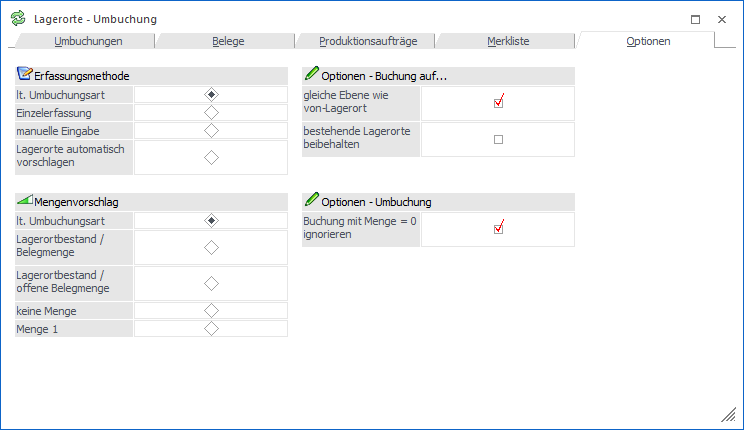
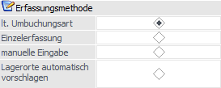
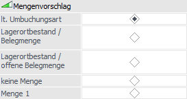
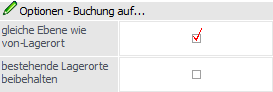
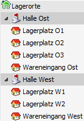

In dem Register "Optionen" können benutzerspezifische Einstellungen, z.B. für die Auswahl von Lagerorten oder dem Mengenvorschlag, definiert werden.
Hinweis
Die Speicherung der Einstellungen erfolgt automatisch.

Folgende Einstellungen stehen zur Verfügung:
Erfassungsmethode

Ø Erfassungsmethode
An dieser Stelle kann mit Hilfe eines Radiobuttons die Erfassungsmethode der Lagerorte gewählt werden.
ü lt. Umbuchungsart
Es soll die
Erfassungsmethode gemäß Umbuchungsart verwendet werden.
ü Einzelerfassung
Nach der
Eingabe der Artikelnummer wird das Fenster "Lagerorte erfassen" geöffnet und
alle Orte mit passender Lagerortfunktion und Bestand angezeigt. Durch Anwahl des
Buttons "Ok" werden alle Lagerorte, bei denen eine Menge erfasst wurde, in das
Umbuchungsfenster übernommen.
Hinweis
Wenn kein Lagerort erfasst wurde (d.h. Feld "von Lagerort" ist leer), so kann das Fenster "Lagerorte erfassen" per Doppelklick im Feld "von Lagerort" wieder geöffnet werden.
ü manuelle Eingabe
Nach der
Eingabe der Artikelnummer kann in dem Feld "von Lagerort" per
Autovervollständigung oder Matchcode ein Lagerort ausgewählt werden.
ü Lagerorte automatisch
vorschlagen
Nach der Eingabe der Artikelnummer werden automatisch alle Orte
mit passender Lagerortfunktion und Bestand in die Tabelle eingefügt.
Mengenvorschlag

Ø Mengenvorschlag
An dieser Stelle kann mit Hilfe eines Radiobuttons eingestellt werden, welche Menge zur Umbuchung vorgeschlagen werden soll.
ü lt. Umbuchungsart
Es soll der
Mengenvorschlag gemäß Umbuchungsart verwendet werden.
ü Lagerortstand / Belegmenge
Es
werden in den Registern "Umbuchung" und "Merkliste" der Lagerortbestand und in
den Registern "Belege" und "Produktionsaufträge" die Belegmenge in der Spalte
"Menge" vorgeschlagen. Voraussetzung hierfür ist, dass mit der Erfassungsmethode
"Lagerorte automatisch vorschlagen" gearbeitet wird.
Hinweis
Durch Nutzung der Erfassungsmethode "Lagerorte automatisch vorschlagen " wird in den Registern "Belege" und "Produktionsaufträge" die Belegmenge von oben nach unten in den einzelnen Lagerortzeilen (je nach Bestand) heruntergerechnet, bis die gesamte Menge aufgeteilt ist.
ü Lagerortstand / offene
Belegmenge
Es werden in den Registern "Umbuchung" und "Merkliste" der
Lagerortbestand und in den Registern "Belege" und "Produktionsaufträge" die noch
offene Belegmenge in der Spalte "Menge" vorgeschlagen. Voraussetzung hierfür
ist, dass mit der Erfassungsmethode "Lagerorte automatisch vorschlagen"
gearbeitet wird.
Hinweis
Durch Nutzung der Erfassungsmethode "Lagerorte automatisch vorschlagen" wird in den Registern "Belege" und "Produktionsaufträge" die noch offene Belegmenge von oben nach unten in den einzelnen Lagerortzeilen (je nach Bestand) heruntergerechnet, bis die gesamte Menge aufgeteilt ist.
ü keine Menge
Es wird in der
Spalte "Menge" keine Menge, d.h. 0, vorgeschlagen.
ü Menge 1
Es wird in der Spalte
"Menge" die Menge mit 1 vorgeschlagen. Voraussetzung hierfür ist, dass mit der
Erfassungsmethode "Lagerorte automatisch vorschlagen" gearbeitet wird.
Hinweis
Mit F3 kann der Lagerstand, die Belegmenge oder die offene Belegmenge in das Mengenfeld übernommen werden
Auf-Lagerort

Ø gleiche Ebene wie von-Lagerort
Mit Hilfe der Option "gleiche Ebene wie von-Lagerort" kann bei automatisch vorgeschlagenen Lagerort definiert werden, ob ein Lagerort der gleichen, der vorgegebene oder der tiefsten Hierarchie-Ebene genutzt werden soll.
ü Option "Lagerort automatisch
suchen" in der Lagerortumbuchungsart ist aktiviert
Ist die Option in der
Umbuchungsart aktiviert, so wird automatisch ein passender "auf Lagerort"
vorgeschlagen. Ist nun gleichzeitig die Option "gleiche Ebene wie von-Lagerort"
aktiviert, so wird die Umbuchung einen passenden Lagerort der gleichen
Hierarchie-Ebene suchen, wie im "von Lagerort" angegeben wurde.
Beispiel
Die Lagerorte in der Struktur
"001 - Standard" sind u.a. wie folgt aufgebaut:

Lagerplatz O1".
ü Bereich "Buchung auf…" wird
genutzt
Wird diese Funktion genutzt, so wird der Lagerort (bei Anwahl des
Buttons "Ausfüllen") nur in den "auf Lagerort" eingetragen (Option "gleiche
Ebene wie von-Lagerort" ist aktiviert), wenn die Hierarchie-Ebenen der Orte
"von" bzw. "auf" gleichlautend sind.
Ø bestehende Lagerorte beibehalten
Mit Hilfe des Bereichs bzw. der Funktion "Buchung auf…" kann der Lagerort der Spalte "auf Lagerort" automatisch ausgefüllt werden. Ist der Ort bereits ausgefüllt, so wird dieser, bei aktivierter Option "bestehende Lagerorte beibehalten", nicht überschrieben.
Ausfüllen
Ø Buchung mit Menge = 0 ignorieren
Durch Aktivierung dieser Option werden alle Buchungszeilen mit einer Menge von "0" ignoriert und somit automatisch verworfen / nicht gebucht.